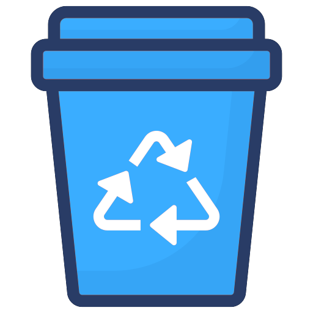
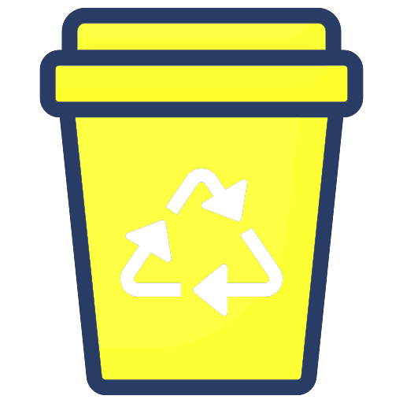
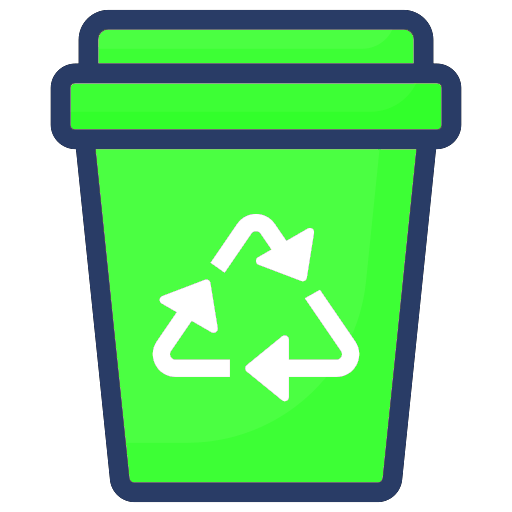
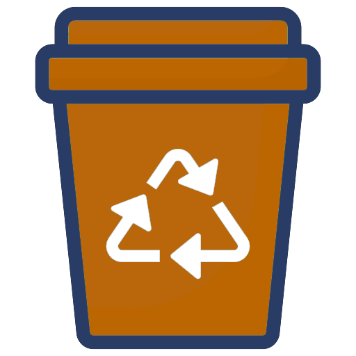

1. Por que a reciclagem é importante para o meio ambiente?
A reciclagem é importante porque ajuda a reduzir a quantidade de resíduos destinados aos aterros sanitários, minimizando a exploração de recursos naturais, conservando energia, reduzindo a poluição e mitigando os impactos das mudanças climáticas.
2. Quais são os benefícios da reciclagem para a sociedade?
A reciclagem traz uma série de benefícios para a sociedade, incluindo a preservação da biodiversidade, a diminuição da quantidade de lixo nos oceanos, a proteção da vida marinha, a geração de empregos na indústria de reciclagem e o estímulo à economia local. Além disso, a educação sobre a reciclagem desde cedo ajuda a formar cidadãos conscientes e responsáveis, capazes de fazer escolhas sustentáveis.
3. O que podemos reciclar e como fazer isso de maneira eficiente?
Podemos reciclar uma ampla variedade de materiais, incluindo papel, plástico, vidro, metal e tecido. Para reciclar de maneira eficiente, é importante separar esses materiais em recipientes apropriados e garantir que estejam limpos e secos. Além disso, é fundamental estar ciente das diretrizes locais de reciclagem para garantir que os materiais sejam processados corretamente.
Video explicativo
Aprende as lixeiras corretas!
Plástico
Papeis
Metais
Vidros
Orgânicos